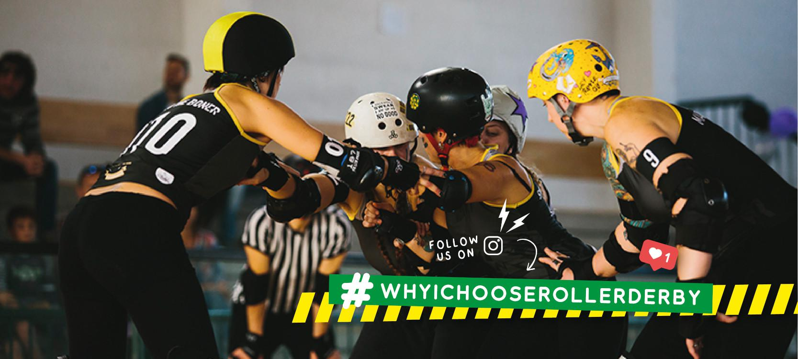
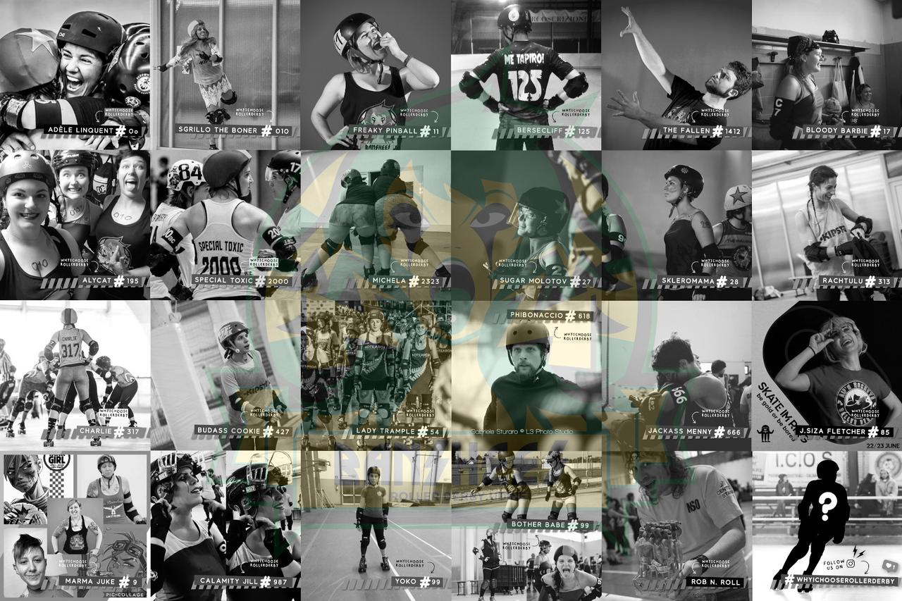

Udine's Banshees show their love for derby in three languages!
O sin contents di ospitâ chest post des Banshees Roller Derby Udine . Par mantignî il spirt dal lôr progjet, chest post al è disponibil par inglês, talian e furlan [o podês sielzi la lenghe tal menù che al è a çampe de imagjin]

Mandi a dutis e a ducj,
o soi Sugar Molotov (Molotov di Zucar) des Banshees – Roller Derby di Udin. O sin une scuadre zovine dal Nord Est de Italie che e cîr di meti adun un roster complet, come che prime di nô tantis altris scuadris a àn fat o a son daûr a fâlu in chest moment in dut il mont. O vin dutis/ducj sperimentât il classic: “roller ce…?” de int, cussì une dì o ai pensât: “Parcè isal cussì dificil spiegâ trop ecitant che al è chest sport? Cemût puedio fâur viodi e sintî ce che o ai viodût jo intal roller derby e cemût che mi fâs sintî ancje vuê?”
Alore o vin decidût di creâ un piçul spazi personâl sui nestris account social (Facebook e Instagram) dedicât a ogni skater, ref, nso o sostenidore/sostenidôr par fâur contâ ce che lôr a amin dal roller derby e parcè che ogni dì a tornin a sielzi di praticâ chest sport straordenari, emozionant ma ancje costôs e pericolôs. O sin personis diferentis ma chest sport nus lee intune maniere uniche, almancul pe mê esperience. E cussì e je nassude la campagne #whyIchooserollerderby; clâr che no vin tancj followers come altris scuadris plui grandis, ma o volevin provâ istès! Cun di plui, il spazi al è un concet une vore impuartant tal roller derby, duncje no vin metût nissun limit: o ai domandât aes mês compagnis e compagns di scuadre di partecipâ a chest progjet sielzint une foto e scrivint dut ce che i plaseve su chest teme. O volevi che si sintissin ben intal condividi ce che si sintivin di condividi. Intant che il progjet al cjapave forme, o ai pensât che al sarès stât biel se ancje altris personis a vessin partecipât, duncje us domandi daurman se o vês plasê di zontâsi ancje voaltris. No vin tant ce dâ in cambi, fale che la sigurece che o fasarìn tesaur di ogni contribût come se al fos nestri.
Ogni test al ven voltât in trê lenghis: talian, la nestre lenghe mari, inglês, parcè che o volìn che il numar plui alt pussibil di personis al leiedi, e il furlan, parcè che e je la lenghe fevelade in Friûl, cheste regjon de Italie e o volìn cjapâ part al sfuarç par tignîle in vite. E fâs part ancje jê de nestre identitât. Une nestre compagne di scuadre e à voltât il so contribût par spagnûl, parcè che al fâs part des sôs origjins, e lu vin amât une vore.
Duncje!
O speri di vêus dade une reson par zontâsi a chest nestri piçul progjet, cu la sperance che al rivi a sparniçâ la gnove che achì al è un mont gnûf pardabon unic. Ca o cjatais i riferiments des nestris pagjinis: la campagne e je za tacade, e o podês viodi cemût che si à disvilupade!
https://www.facebook.com/bansheesrollerderby/ https://www.instagram.com/bansheesrollerderby/
Graciis par vênus dedicât un tic dal vuestri timp
Sugar Molotov
Banshees Roller Derby Udine
Nota: o ai scrite cheste letare cuant che la campagne e jere tacade di pôc; e je cressude biel planc ma in maniere costante e o ai voie di dî graciis a dutis lis personis che nus àn judadis par lâ indevant in chest progjet: Enrico Comar e Maria Devincenti che a àn voltât cualchi test par furlan, Enrico Gigante che al à tradusût la plui part dai tescj, e che no podarìn mai ringraciâ avonde. Simpri pront e une vore svelt! O ringracii l’ARLeF, Agjenzie Regjonâl pe Lenghe Furlane e Francesca Battistutta dal Sportel Regjonâl pe lenghe furlane par dutis lis revisions dal furlan. Jê nus à ancje judadis une vore cun chest articul e e je une vore preziose par me pal sô caratar solâr e pe sô anime furlane braurose. Dutis lis grafichis a son stadis realizadis di Giulia Malaridotti (Woozy McWolf), la nestre passionade di cjans cence sium, buine di mandâmi lis fotografiis editadis ancje aes 3 di buinore cussì che o podedi publicâlis par timp. I tescj par inglês a son stâts revisionâts di Chealsey Lynch (Marma Juke), la nestre blocker americane, che e sarà une Banshees par simpri intai nestris cûrs – tu nus mancjarâs une vore. Menzon speciâl pes mês compagnis matis SMMs: Alessandra Menardi (Jackass Menny), Sveva Angelini (Freaky Pinball) e Alessandra Piermattei (Alycat), che a àn crodût ta chest progjet cuant che nancje jo i crodevi e che mi àn simpri parât il daûr cuant che no rivavi plui a curâ il mont virtuâl. Fantatis, o sês lis miors. No sarès mai rivade a fâ dut cence di voaltris. Ultimis, ma che no son mancul impuartantis, dutis lis Banshees, che a àn contentât chest gno estri, e dutis lis personis, skater e officials, che a àn cjapât part a chest progjet e che nus àn mandât i tocs plui personâi su lis lôr derby storiis e che nus àn fatis vaî. Graciis.
#rollerderby #whyIchooserollerderby #quadskates #derbylife #rollerskating #rollerskate #roller #skate #derby #rollerskates #skating #flattrackrollerderby #derbylove #derbygirls #derbyguys #derbyfamily #supportyourlocalteam #bansheesudine #bansheetudine #friuliveneziagiulia #fvg #jointhebanshees #friulano #lenghefurlane #ARLeF #scottishrollerderby